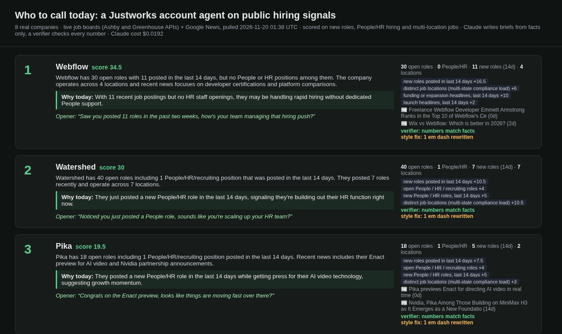

Built by Gursimar Singh, Nov 2026, on real public data

The agent reads live job boards and the last 30 days of news for 8 growing US companies and ranks who a Justworks seller should call today, based on new roles, People and HR hiring, and multi-location jobs. Claude writes a brief, a why-today line and an opener from those facts only, and a checker matches every number against the source data before it is shown. Webflow ranked first, with 11 roles posted in the last 14 days and no People or HR openings.
What I'd improve next: add headcount or benefits-page changes as a signal, and pull the actual People role titles so the opener can name them.